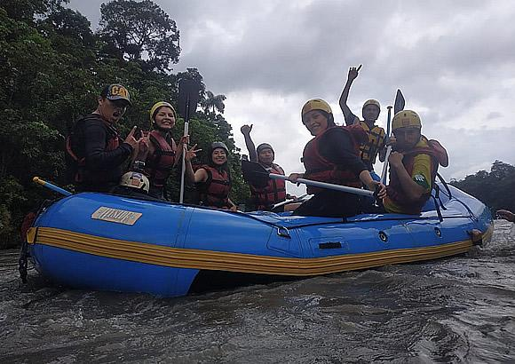

ABOUT US
Our mision:
Promote community development in the municipality and environmental awareness.
Objective
Adventure tours in Villa Tunari, the tourist capital of Cochabamba. Bolivia Rafting works with experts, so you can enjoy it to the fullest.
Trip summary:
IRF-certified guides · Wading or swimming in the river · Confidence jump into the water from a 6-meter diving platform · Regular boating equipment for the activity (life jacket, helmet, paddle)· Safety briefing and instructions at the start · 12 km of river · Showers and restrooms available for changing clothes · FREE digital photos and videos of the activity · Transportation to and from Villa Tunari